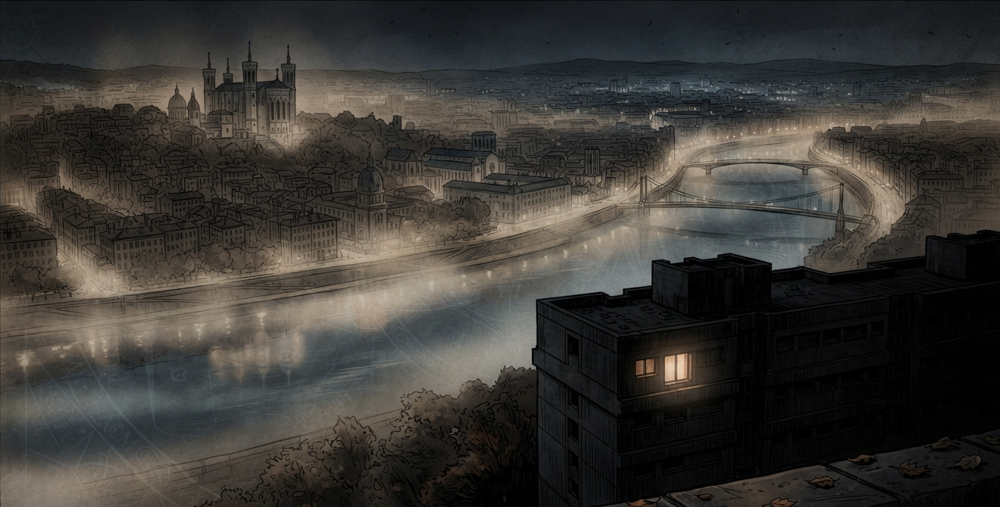
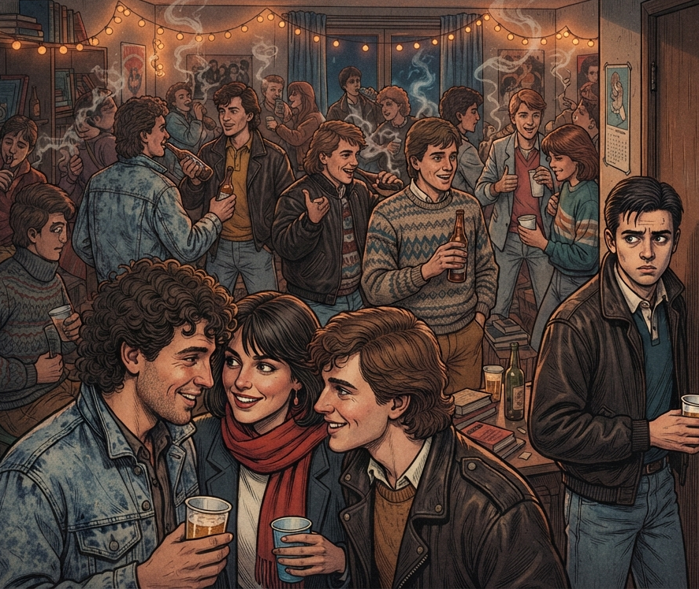
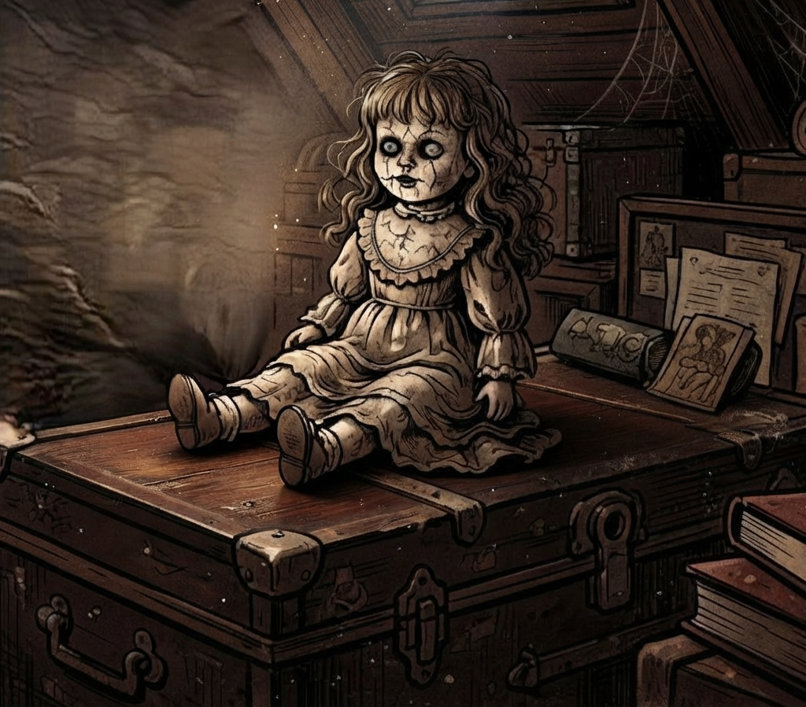
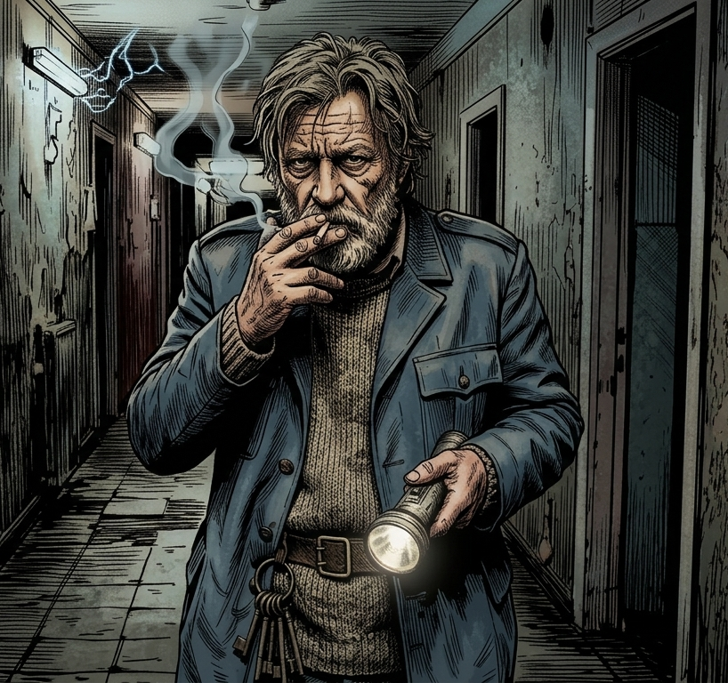
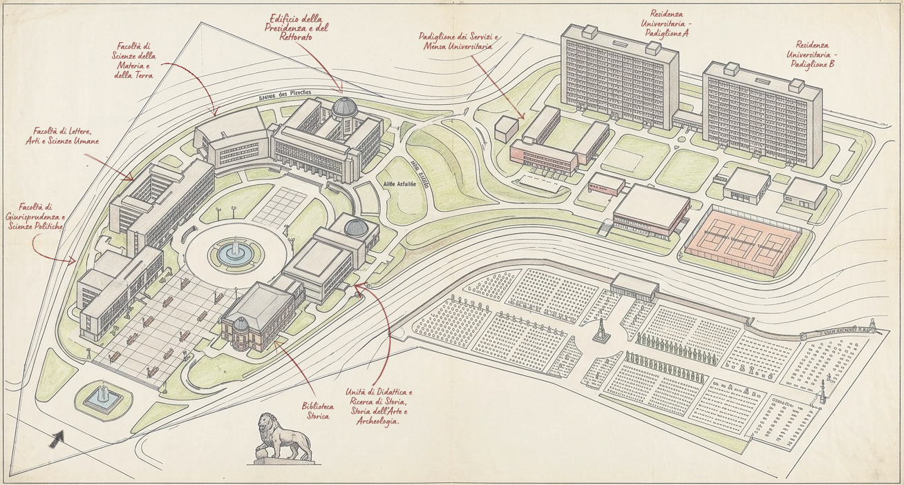
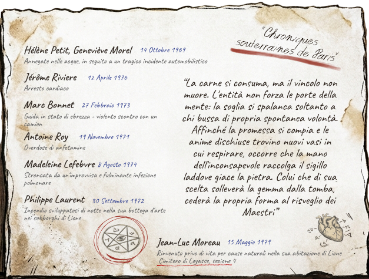
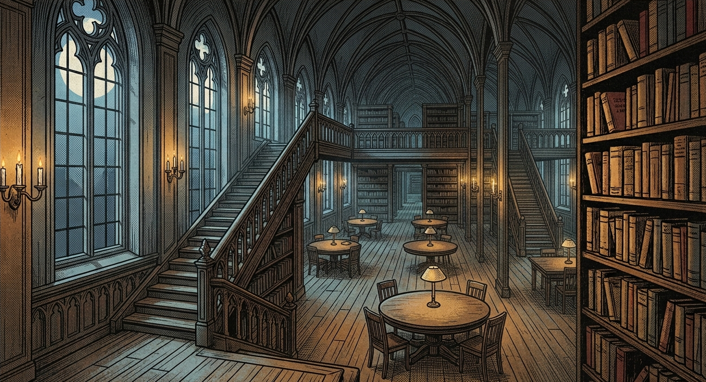
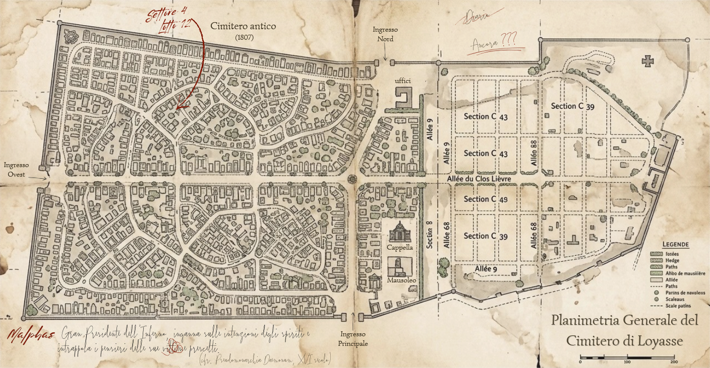
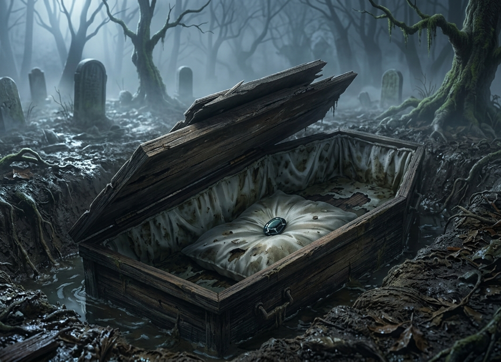
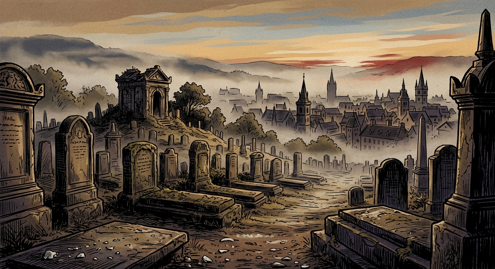

CRONACHE & DADI
[ONE-SHOT HORROR SCOLASTICO & PULP]
🎧 Accendi l'atmosfera...
Lione, autunno 1980. Sotto la presidenza di Mitterrand, la città vive una fase di transizione sospesa tra la decadenza industriale dei sobborghi e il fermento culturale delle sue università. I palazzi storici e i grandi complessi modernisti sono avvolti da una patina di smog e fuliggine, mentre le nebbie fitte e umide che risalgono costantemente dai fiumi Rodano e Saona soffocano i vicoli e i colli. Sulla sommità del colle di Saint-Irénée, isolata dal resto della città e circondata da mura e vegetazione scura, si erge la Cité Universitaire André Allix: un complesso di edifici in cemento e mattoni le cui stanze spoglie e i lunghi corridoi ospitano centinaia di studenti fuori sede.
Il freddo della notte preme contro i vetri delle finestre, mentre il basso continuo della musica rock gracchiante da un vecchio mangiadischi e il chiacchiericcio della festa riempiono le pareti della sala comune. L'aria è densa di fumo di sigarette, odore di birra e sudore. Eppure, dietro la spensieratezza di quella sera autunnale, si avverte una sottile tensione: come se la normale allegria del campus stesse scivolando via, strozzata da un'attesa sorda. Nascosto tra le travi di legno scuro e le pareti polverose della soffitta chiusa al piano di sopra, un segreto ha ricominciato a respirare.

Nel maggio del 1968, mentre le strade di Lione bruciavano di rivolte studentesche e contestazioni, tra le mura della Cité Universitaire André Allix si muoveva un'ambizione ben più pericolosa della semplice rivolta politica. Grazie alle sue meticolose ricerche esoteriche, il Professor Jean-Luc Moreau — docente della facoltà Storia — si era imbattuto nella sezione e segreta della biblioteca universitaria. Lì non aveva trovato un semplice libro, ma un'antica pergamena in cui venivano decantate le odi e i premi promessi ai seguaci di Malphas, contenente anche un antico rituale per conservare le anime e farle reincarnare in nuovi corpi. Ossessionato dal desiderio di lasciare un segno indelebile nella storia, Moreau decise di mettere in pratica quelle conoscenze. Sfruttando la propria posizione accademica, selezionò un ristretto gruppo di matricole ambiziose e organizzò un laboratorio intitolato "Gli scritti perduti: tra finzione e realtà.", utilizzandolo come copertura per dare vita a un circolo occulto. I giovani, sedotti dalla promessa di fama e immortalità, iniziarono a celebrare rituali in onore dell'entità. In cambio della loro devozione e della loro energia vitale, Malphas li ricompensava con doni innaturali: un fascino magnetico capace di influenzare gli altri, un'intelligenza manipolatoria fuori dal comune e una resistenza fisica superiore a quella umana. Ma ogni dono esigeva un prezzo. Quando le prime morti e sparizioni cominciarono a susseguirsi, il circolo si disgregò sotto il peso della paura, dei segreti e dei rimorsi. L'amministrazione universitaria, temendo che la vicenda compromettesse la reputazione dell'istituto, insabbiò gli incidenti e limitò l'accesso ad alcune sezioni della biblioteca. I membri del gruppo si dispersero, andando incontro a destini differenti: alcuni morirono durante gli scontri del 1968, altri furono vittime di incidenti, malattie o overdose. Eppure, la fine del circolo non coincise con la scomparsa del male che aveva evocato.
Prima che tutto crollasse, Moreau aveva tentato di preservare il potere del rituale legandolo a un oggetto materiale: una bambola di porcellana. Il tentativo, tuttavia, non andò secondo i suoi piani. La bambola divenne il ricettacolo di Malphas, mentre una gemma nera, utilizzata come fulcro del rituale, mantenne aperto il legame tra l'entità e il mondo dei vivi. La coscienza del professore rimase intrappolata in quel legame, sospesa tra la vita e la morte, incapace di liberarsi del tutto dalla creatura che aveva cercato di dominare.
Dodici anni dopo, nell'autunno del 1980, la Cité Universitaire sembra aver dimenticato gli orrori del passato. Sotto la presidenza di Valéry Giscard d'Estaing, Lione continua a vivere tra le tensioni sociali, la decadenza dei vecchi quartieri industriali e il fermento della vita universitaria. Le nebbie che risalgono dal Rodano e dalla Saona avvolgono gli edifici del campus, mentre le nuove generazioni di studenti riempiono i corridoi di musica, discussioni e sogni di un futuro migliore. Durante una festa studentesca, due ragazzi in cerca di un luogo appartato si spingono oltre i divieti e raggiungono la vecchia soffitta, chiusa da anni. Tra bauli dimenticati e travi ricoperte di polvere, trovano la bambola di porcellana. I suoi occhi di vetro sembrano riconoscerli, come se li avessero attesi per tutto quel tempo. Non c'è lotta, né un grido a spezzare il silenzio. Solo un incontro innaturale, un richiamo a cui i due studenti rispondono senza comprenderne la natura. Le loro coscienze vengono lentamente separate dai corpi, che rimangono immobili, pallidi e gelidi, trasformandosi in tramite per una presenza che attende di tornare a manifestarsi. Non sono semplici vittime di un'aggressione, ma i primi elementi di un rituale rimasto incompiuto per dodici anni. Attraverso di loro, Malphas comincia a ricostruire il legame spezzato con il mondo materiale. La soffitta diventa una soglia tra la realtà e una sua copia distorta, mentre il richiamo dell'entità si propaga silenziosamente tra gli studenti.
La festa continua, ignara di ciò che sta accadendo al piano superiore. Ma il rituale ha ripreso il suo corso. E, questa volta, altri sono già stati scelti per prendervi parte.

È una fredda serata autunnale del 1980. I corsi del primo semestre alla Cité Universitaire André Allix sono appena iniziati, ma le preoccupazioni per gli esami, le spese e un futuro ancora incerto cominciano già a farsi sentire. Per una sera, però, c'è un modo per dimenticare tutto: una festa al campus. La squadra sportiva ha organizzato un party di benvenuto per celebrare l'inizio dell'anno accademico e accogliere le nuove matricole. I ragazzi più popolari e le ragazze dei circoli studenteschi più influenti si sono dati appuntamento per bere, ballare e conoscere nuove persone. Tra sorrisi di circostanza, sguardi curiosi e conversazioni apparentemente innocue, qualcuno ha già iniziato a tessere le prime alleanze.
Anche voi siete lì, invitati dal vostro amico Gérard Dupuis, uno studente di Geologia con cui avete legato durante alcune serate trascorse sui libri. O, almeno, questo era il piano: ogni tentativo di studiare finisce immancabilmente per trasformarsi in una partita a "Dungeons & Dragons".
La festa è gremita. L'aria è pesante, impregnata di fumo di sigaretta, sudore e birra rovesciata. Le ragazze indossano maglioni di lana oversize, gonne lunghe a pieghe e pantaloni di velluto a coste; i ragazzi sfoggiano giacche di jeans, camicie sbottonate e capelli lunghi. Qualcuno si sfida a freccette, altri partecipano a giochi di bevute con birra economica, mentre nei corridoi più appartati circolano spinelli e pasticche di anfetamine.
La musica è assordante e le conversazioni si sovrappongono in un brusio continuo. Con il passare del tempo, però, qualcosa comincia a sembrarvi fuori posto. I volti si deformano per un istante ai margini del vostro campo visivo; le risate si allungano in echi innaturali, le voci sembrano arrivare da molto lontano. Il tempo rallenta, poi riprende a scatti. Forse è soltanto l'effetto dell'alcol e delle sostanze che circolano alla festa. Forse siete semplicemente stanchi.
Poi accade qualcosa di ancora più strano.
Non ricordate esattamente quando le avete incontrate, ma vi ritrovate a seguire tre ragazze lungo un corridoio sempre più silenzioso. Non sapete perché abbiate deciso di accompagnarle. Vi sembra una scelta del tutto naturale, quasi che l'idea sia stata vostra fin dall'inizio. Le ragazze non parlano molto; ogni tanto si scambiano un sorriso complice e continuano a salire le scale di servizio.
Quando finalmente vi fermate, vi rendete conto di non ricordare più i loro nomi. Provate a richiamare alla mente i loro volti, ma i lineamenti vi sfuggono come un sogno appena svanito.
Davanti a voi si apre la porta di una vecchia soffitta.
La varcate. E, per un istante, avete la sensazione che qualcosa dall'altra parte vi stesse aspettando da molto tempo.
Al centro della stanza, Gérard Dupuis e Josiane, una studentessa di Storia che avete già incrociato al campus, sono immobili come statue di cera. Hanno gli occhi spalancati, fissi su un punto indefinito, e non reagiscono alla vostra presenza. I loro volti sono pallidi, le braccia abbandonate lungo i fianchi, le dita rigide.

Poco distante, sopra un vecchio baule, è seduta una bambola di porcellana. Indossa vestiti consunti e ha il volto pallido, incorniciato da riccioli ingialliti dal tempo. I suoi occhi di vetro sembrano riflettere una luce che nella stanza non esiste. Un cigolio sottile spezza il silenzio.“Siete venuti anche voi a farmi compagnia?”
La voce è flebile, fredda, quasi infantile. Eppure le parole sono nitide. Non avete dubbi: provengono dalla bambola.
Un vento gelido attraversa la soffitta, benché nessuna finestra sia aperta. Vi sfiora la pelle e vi spinge istintivamente a fare un passo indietro. Poi, alle vostre spalle, risuona un tonfo secco. Vi voltate di scatto.
La porta è scomparsa. Al suo posto c'è soltanto una parete di legno, continua e priva di maniglie. Vi precipitate verso l'unica finestra, sperando di riconoscere i tetti del campus o le luci della città. Ma fuori non c'è Lione.
Oltre il vetro si estende un vuoto assoluto, un abisso nero senza stelle, edifici o orizzonte. Non è notte, non è nebbia: è come se il mondo, al di là della finestra, avesse semplicemente smesso di esistere. La musica della festa arriva ancora dal piano inferiore, ma è distante e deformata, come ascoltata attraverso una parete d'acqua. Qualunque cosa stia accadendo, non siete più nella soffitta che ricordavate.
I personaggi non sono stati rinchiusi in una stanza. Sono scivolati in un piano dimensionale sovrapposto alla realtà, una copia distorta della soffitta che esiste tra il mondo dei vivi e il dominio di Malphas.
Il mondo reale continua a esistere, ma è separato da loro da un velo impenetrabile. I rumori della festa arrivano ovattati e deformati; nessuno, dall'altra parte, può vedere o sentire i personaggi. Non importa quanto gridino o quanto forte bussino alle pareti:
per il mondo reale, è come se non fossero mai entrati nella soffitta.
I fumi e le sostanze assunti durante la festa possono rendere più difficile distinguere le percezioni reali dalle illusioni, ma non spiegano ciò che sta accadendo. Lascia che i giocatori dubitino di ciò che vedono senza suggerire loro che tutto sia soltanto un'allucinazione.
La visione iniziale di Gérard e Josiane può richiedere una prova di Mente - (Media) per resistere allo shock psichico. In caso di fallimento, descrivi un momentaneo senso di vertigine, un ricordo che sembra non appartenere al personaggio o la sensazione di essere osservato da qualcuno alle sue spalle. Adatta le conseguenze al sistema di gioco utilizzato.
 ANNUARIO 1968 • Un vecchio annuario scolastico
della Cité Universitaire. Sette volti di studenti del primo anno sono cerchiati con inchiostro rosso cupo:
ANNUARIO 1968 • Un vecchio annuario scolastico
della Cité Universitaire. Sette volti di studenti del primo anno sono cerchiati con inchiostro rosso cupo:Lascia ai personaggi il tempo di esplorare la stanza, esaminare i corpi e sfogliare i documenti. Quando la tensione comincia a calare, o quando senti che la scena ha raggiunto il suo punto di svolta, riprendi la narrazione.
Gérard e Josiane sono lì davanti a voi, immobili, con lo sguardo fisso nel vuoto e la pelle di quel candore innaturale, fredda e liscia come ceramica. Poi, dal piano inferiore, la musica della festa ha un sussulto stridulo. Un colpo sordo e metallico rimbomba dalle viscere dell'edificio.
La luce muore all'istante.
Per un attimo non vedete più nulla. Sentite soltanto il rumore del vostro respiro e, forse, un lieve scricchiolio provenire dal punto in cui si trovava la bambola.
La luce torna a sfarfallare, debole e giallastra. La soffitta riappare davanti ai vostri occhi.
Ma Gérard e Josiane sono scomparsi. Nessun grido. Nessun segno di lotta. Soltanto lo spazio vuoto in cui, fino a un momento prima, si trovavano i loro corpi.
La bambola giace a terra, riversa sul volto, immobile e apparentemente inanimata. Sembra un giocattolo qualunque, abbandonato in una soffitta dimenticata.
Prima che riusciate a comprendere ciò che è appena accaduto, dalla scalinata di legno sale il rumore di passi pesanti e cadenzati. Un fascio di luce bianca taglia il buio e illumina la tromba delle scale. Una voce ruvida, stanca e irritata risuona nel corridoio.
“C'est fini! Fuori tutti!”
È il vecchio guardiano del padiglione. Sta salendo le scale, facendo sbattere un pesante mazzo di chiavi contro il corrimano di ferro. Dal piano inferiore arrivano le proteste degli studenti, il fruscio di giacche indossate in fretta e il rumore di decine di scarpe che si dirigono verso l'uscita.
La festa è finita.
Vi precipitate verso la porta, decisi a uscire da quella stanza maledetta. Questa volta, però, la maniglia è al suo posto e la porta sembra del tutto normale. La afferrate e tirate con forza, ma non si apre: è chiusa a chiave dall'esterno. Dal corridoio arriva un rumore familiare. Il tintinnio metallico di un mazzo di chiavi si avvicina lentamente, accompagnato da passi pesanti e regolari. Una chiave gira nella serratura e la porta si spalanca di colpo. Sulla soglia compare un uomo sulla sessantina, con una torcia d'ordinanza in una mano e un pesante mazzo di chiavi nell'altra. Ha il volto contratto in un'espressione di irritazione e stanchezza. Alle sue spalle, il corridoio è illuminato dai neon e l'aria porta con sé il solito odore di tabacco, birra rovesciata e fumo di marijuana.
“Ma che diavolo state facendo qui dentro?”
Vi punta la torcia dritta negli occhi, accecandovi per un secondo, mentre scuote la testa disgustato.
“Ascoltatemi bene. Sono stanco, ho passato la serata a tenere a bada una banda di studenti ubriachi e non ho nessuna voglia di chiamare il rettorato per quattro ragazzi che giocano a nascondino tra le tubature. Per questa volta chiudo un occhio e non dico niente a nessuno. Ma adesso fuori. Subito!”
Non sembra avere la minima intenzione di ascoltare spiegazioni. Per lui siete soltanto studenti che hanno trovato un posto appartato dove bere, fumare o combinare qualche sciocchezza. Eppure, mentre vi fa cenno di uscire, vi rendete conto di una cosa inquietante: non vi chiede perché siete spaventati. Non domanda nulla dei due ragazzi che avete visto nella soffitta. E non sembra essersi accorto di niente.

Jean-Pierre Blain ha poco più di sessant'anni, è stanco, infastidito dalla pioggia e dal baccano della festa. È convinto che i personaggi siano semplicemente ubriachi o sotto l'effetto di sostanze. Non è malvagio, ma non ha alcuna intenzione di lasciarsi coinvolgere nei problemi degli studenti.Il guardiano vuole liberare la soffitta e chiudere il padiglione. Non crede a teorie su complotti, apparizioni o sparizioni soprannaturali. Se i personaggi insistono, li interrompe, li rimprovera e minaccia di avvertire il rettorato. Se mostrano gli oggetti nella stanza, il guardiano è incapace di riconoscere la natura di ciò che gli viene mostrato, ad esempio, la bambola è solamente un vecchio giocattolo impolverato; il quaderno sembra una raccolta di scarabocchi, deliri o annotazioni incomprensibili. I ritagli di giornale li considera vecchie notizie sulle agitazioni studentesche. L'annuario è un vecchio registro di studenti.
Se i personaggi gli parlano di Gérard e Josiane, il guardiano può rispondere di non aver visto nessuno dei due. Non conosce il loro destino e non sa che siano scomparsi.
La soffitta specchio si è dissolta, ma il passaggio ha lasciato tracce negli oggetti e nella memoria dei personaggi. Il guardiano non può percepire la vera natura della bambola o dei documenti, perché la distorsione che li protegge rende le loro anomalie apparentemente innocue agli occhi di chi non è coinvolto. Questo non significa che i personaggi abbiano immaginato tutto. La loro esperienza è reale, ma non è ancora verificabile agli occhi degli altri. Se un personaggio insiste nel cercare prove, non negargli ogni possibilità d'indagine: lascia che raccolga gli oggetti, conservi i documenti o ricordi dettagli utili. Il problema non è che non esistano indizi, ma che il loro significato rimane oscuro.
In pochi secondi, la musica, le grida e il caos della festa diventano soltanto un ricordo lontano. Il padiglione sprofonda in un silenzio innaturale, interrotto soltanto dal ticchettio della pioggia sui vetri in fondo al corridoio e dal ronzio stanco dei neon del pianerottolo. L'aria puzza ancora di birra e fumo, ma la festa è finita.
Siete soli. La realtà attorno a voi sembra tornata del tutto normale, ma sapete benissimo che ciò che avete visto nella soffitta non era un'allucinazione: Gérard e Josiane, la bambola parlante, i ritagli di giornale, quel diario... Cosa farete?

Planimetria Generale della "Cité Universitaire André Allix"
Utilizza la mappa del campus per consentire ai giocatori di scegliere liberamente dove andare e quali luoghi esplorare. I pin numerati indicano le aree visitabili e possono essere usati per presentare le descrizioni dei luoghi, gli incontri e gli indizi disponibili.
Il corridoio del blocco residenziale è deserto, illuminato soltanto dai neon fiacchi che sfarfallano a intermittenza. Il silenzio è quasi assoluto, interrotto ogni tanto dal ronzio elettrico delle lampade e dalla pioggia che batte contro le finestre. La porta della stanza di Gérard è rimasta socchiusa. Quella di Josiane si apre con una leggera spinta. Le stanze sembrano essere rimaste esattamente come le avevano lasciate prima della festa: letti sfatti, libri aperti sulle scrivanie, giacche abbandonate sulle sedie e tazze dimenticate accanto ai quaderni. Eppure, qualcosa non va.
Nella stanza di Gérard, una patina sottile e lucida ricopre parte della scrivania e i vetri della finestra. Ricorda la brina, ma quando la sfiorate non è fredda né umida. È completamente asciutta. La luce del neon si riflette sulla superficie in modo innaturale, come se il vetro fosse ricoperto da una pellicola trasparente.
La stanza di Josiane, invece, presenta un ordine insolito. Il letto è rifatto con una precisione quasi maniacale, gli abiti sono piegati e sistemati nell'armadio e i libri sono allineati con cura. Sulla scrivania restano alcuni appunti universitari, disposti in pile ordinate. Tutto sembra al proprio posto, ma la sensazione è quella di una stanza preparata per qualcuno che non tornerà.

Appunti di Josiane

Di notte, la biblioteca dell'ateneo sembra una cattedrale sconsacrata. Il profumo della carta antica, della pelle consumata e della cera per pavimenti aleggia tra gli scaffali. Le luci sono poche e distribuite a intervalli regolari; tra una zona illuminata e l'altra si aprono ampie distese d'ombra. I vostri passi risuonano lungo la navata centrale, affiancata da alte librerie di legno scuro. Le loro sagome si allungano sul pavimento, deformandosi quando attraversate i coni di luce. Raggiungete la sezione dedicata al folklore e alle leggende popolari francesi. Il corridoio che si srotola davanti a voi termina con una parete dominata da un grande dipinto d'epoca, racchiuso in una pesante cornice di legno scuro
finemente intagliato. La tela raffigura una veduta cupa e nebbiosa del vecchio cimitero monumentale di Lione, sommerso da una vegetazione selvatica
di edera e tassi secolari. Tra le tombe, spicca al centro della composizione una solitaria cappella gentilizia in stile neoclassico,
sostenuta da imponenti colonne di marmo grigio.
Il corridoio che si srotola davanti a voi termina con una parete dominata da un grande dipinto d'epoca, racchiuso in una pesante cornice di legno scuro
finemente intagliato. La tela raffigura una veduta cupa e nebbiosa del vecchio cimitero monumentale di Lione, sommerso da una vegetazione selvatica
di edera e tassi secolari. Tra le tombe, spicca al centro della composizione una solitaria cappella gentilizia in stile neoclassico,
sostenuta da imponenti colonne di marmo grigio.
Accesso alla biblioteca
Se i personaggi non hanno recuperato il mazzo di chiavi nell'Edificio della Presidenza e del Rettorato, per accedere alla biblioteca devono superare una prova di Furtività, Destrezza o Scassinare - (Difficile). In alternativa, possono cercare una chiave, convincere qualcuno ad aiutarli o individuare un altro accesso. Non è necessario che tutte le soluzioni siano disponibili: valuta le proposte dei giocatori e le conseguenze plausibili.
Il passaggio segreto
Il volume Chroniques souterraines de Paris è il meccanismo che apre il passaggio. Se i personaggi lo hanno già incontrato negli appunti di Moreau, possono riconoscerlo e capire che potrebbe avere un significato particolare. Se non riescono a individuarlo subito, una prova di Investigazione – (Media) consente di notare che un libro ha il dorso più consumato degli altri e che la polvere intorno alla mensola è stata disturbata.
Passate in rassegna i dorsi dei libri, illuminandoli con torce o fiammiferi. Il pulviscolo si solleva nell'aria, brillando per un istante nella luce. Poi individuate un tomo dalla copertina in pelle consunta, più massiccio degli altri. Il titolo, impresso in lettere ormai sbiadite, recita: "Chroniques souterraines de Paris". Afferrate il volume e lo tirate verso di voi. Uno scatto metallico rompe il silenzio. Per qualche secondo non accade nulla. Poi, dietro la parete del quadro, qualcosa si mette in movimento: un rumore profondo di ingranaggi arrugginiti, seguito da uno stridio di legno e pietra. Il grande dipinto si sposta lentamente sui cardini, sollevandosi quanto basta per rivelare un'apertura nascosta nella muratura. Da essa fuoriesce un soffio d'aria fredda e stantia, carico di odore di muffa, polvere e calce. Dietro il quadro si apre una stretta scala a chiocciola in pietra grezza. I gradini scompaiono nel buio dei sotterranei.
La scala scende più in profondità di quanto vi aspettaste. Il rumore dei vostri passi si perde tra le pareti umide, mentre l'aria diventa progressivamente più fredda. In fondo, la scala sbocca in una cripta con il soffitto ad arco e le pareti di mattoni a vista. Scaffalature metalliche arrugginite occupano buona parte dello spazio. Vi sono ammassati libri abbandonati, scatoloni pieni di registri, documenti amministrativi, vecchie fotografie di studenti, costumi, maschere e oggetti di cui nessuno sembra essersi preoccupato per decenni. Al centro della stanza si trova un lungo tavolo di legno. Sopra di esso è distesa una mappa del cimitero di Loyasse, tenuta aperta da alcuni volumi.
Qualcuno è già passato di qui.

Indizi nella cripta
Una prova di Mente o Investigazione – (Media) permette ai personaggi di interpretare le annotazioni sul tavolo e ricostruire alcuni punti:
La mappa e le annotazioni costituiscono il collegamento diretto con il luogo successivo dell'indagine.
La mappa del cimitero
La planimetria indica il percorso verso la tomba del professore. Sul margine sono riportate alcune parole isolate, scritte con la stessa grafia degli appunti di Josiane. Le note suggeriscono che chi ha condotto l'indagine prima dei personaggi conoscesse già una parte della storia, ma non fosse riuscito a completarla. La mancanza dell'Ancora è il dettaglio che spinge a cercare altrove.
La pioggia battente scende fitta sul colle di Fourvière, trasformando i viali alberati in rivoli di fango scuro. Davanti a voi si erge la cancellata monumentale del Cimitero di Loyasse, le cui punte di ferro battuto si perdono nella nebbia notturna. L'odore della terra bagnata, del marmo antico e della vegetazione in decomposizione vi accompagna non appena varcate la soglia.
Il Cimitero di Loyasse rappresenta il culmine dell'indagine. I personaggi sono arrivati fin qui seguendo gli indizi trovati nella biblioteca sotterranea e ora devono raggiungere la tomba del professor Jean-Luc Moreau. L'atmosfera deve trasmettere isolamento, freddo e la sensazione di essere osservati. Non è necessario introdurre creature soprannaturali durante l'esplorazione: il luogo, la pioggia e la possibilità di essere scoperti sono sufficienti a creare tensione.
I personaggi possono decidere di fare ingresso da uno dei tre punti principali segnati sulla planimetria. Ciascun accesso presenta un'insidia o un ostacolo:Ingresso Principale (Sud)
"Il cancello monumentale si erge davanti a voi, nero e lucido sotto la pioggia. Una pesante catena arrugginita ne tiene unite le ante. Oltre le sbarre, i viali del cimitero scompaiono tra gli alberi e la nebbia."
Per entrare, i personaggi possono tentare una prova di Forza o Scassinare - (Facile), oppure utilizzare le cesoie o altri attrezzi recuperati in precedenza, se adatti a rimuovere la catena. Un fallimento non deve necessariamente impedire l'accesso: il tentativo può richiedere più tempo oppure produrre un forte rumore metallico, udibile in buona parte del cimitero. Il rumore attira i cani da guardia del custode notturno, che iniziano ad abbaiare in lontananza. I personaggi dovranno nascondersi, allontanarsi o trovare un percorso alternativo tra i viali. Se vengono individuati, il custode potrebbe iniziare a cercarli, aumentando la pressione durante l'esplorazione.
Ingresso occidentale (Ovest)
"Una vecchia porta di servizio è quasi completamente nascosta dai rovi. Il legno è imputridito e deformato dall'umidità; le radici si sono intrecciate tra le assi, mentre il terreno davanti all'ingresso è stato eroso dalla pioggia."
I personaggi devono liberare il passaggio usando attrezzi da taglio o procedendo con cautela tra la vegetazione. Chi tenta di aprirsi un varco senza gli strumenti adatti rischia di ferirsi con le spine o di impiegare molto tempo. Oltre la porta, il terreno forma un terrapieno instabile che scende verso un fosso. Una prova di Equilibrio o Destrezza - (Facile) permette di attraversarlo senza incidenti. In caso di fallimento, un personaggio può scivolare lungo il pendio, subendo danni lievi secondo il sistema utilizzato o perdendo temporaneamente un oggetto che trasportava. Gli altri possono aiutarlo a rialzarsi o recuperare l'equipaggiamento. La difficoltà di questo accesso è soprattutto ambientale: non ci sono guardie da evitare, ma il gruppo deve prestare attenzione a ogni passo.
Ingresso settentrionale (Nord)
"Un varco secondario si trova vicino agli uffici amministrativi del cimitero. Da una finestra filtra una luce giallastra. Dietro il vetro si distingue la sagoma di un uomo seduto a una scrivania, intento a consultare alcuni registri alla luce di una torcia."
Questo ingresso è il più discreto, ma richiede cautela. I personaggi devono superare una prova di Furtività per attraversare il varco senza essere notati dal custode. Se vengono scoperti, il custode si avvicina per chiedere spiegazioni. Non è necessario che reagisca con violenza: può intimare loro di andarsene, minacciare di chiamare le autorità o tentare di accompagnarli fuori dal cimitero. I personaggi possono cercare di distrarlo, mentire sul motivo della loro presenza o fuggire prima che riesca a raggiungerli. Un fallimento complica la scena, ma non deve costringere il gruppo ad abbandonare l'indagine.
Vi addentrate in un labirinto di mausolei, croci consumate e cappelle gentilizie. La pioggia tamburella sulle lapidi e le ombre degli alberi si allungano sui sentieri, deformandosi a ogni lampo lontano. Infine, raggiungete il luogo segnato sulla mappa. Tra le edicole funerarie spunta una lapide di granito grigio, quasi del tutto inghiottita dall'edera. L'incisione al centro riporta il nome del professor Jean-Luc Moreau.

Cominciate a scavare. Dopo un lavoro faticoso, urtate contro una superficie di legno. Liberate il coperchio della bara e forzate i cardini arrugginiti. Quando finalmente riuscite ad aprirla, scoprite che all'interno non ci sono resti umani. Non c'è uno scheletro, né una veste consunta. Soltanto un cuscino di raso scolorito, sul quale riposa una piccola gemma scura, dalle sfaccettature irregolari e nerastre. La sua superficie riflette la luce delle torce senza restituirla davvero, come se la luce venisse assorbita dalla pietra. La forma della gemma corrisponde esattamente alla cavità vuota che avete trovato sul torace della bambola di porcellana.La gemma è l'Ancora citata negli appunti della cripta. È l'elemento che mantiene il legame tra il ricettacolo, il rituale e il piano specchio.
Quando un personaggio tocca la gemma a mani nude, avverte un dolore improvviso alla testa. La sua mente viene invasa da immagini che non gli appartengono:
"Vede una stanza illuminata da candele. Sette figure sono disposte attorno a un tavolo, mentre un uomo annota qualcosa su un quaderno dalla copertina nera. Sul tavolo è posata la bambola di porcellana. Una voce maschile, lontana e soffocata, sussurra:"
“Il contenitore è pronto. Ma il legame non è completo.”
Il personaggio che ha toccato la gemma deve effettuare un tiro di Volontà o una prova equivalente.
In entrambi i casi, la gemma torna silenziosa. La funzione di questa prova è rivelare un frammento del passato e anticipare che Moreau aveva predisposto il ricettacolo senza riuscire a completare il legame. Non fornire ancora tutta la spiegazione: sarà la comparsa di Josiane a trasformare questo indizio in una nuova domanda.
Il silenzio del cimitero viene interrotto da un rumore di passi sul sentiero. Qualcuno si sta avvicinando, avanzando a fatica tra il fango e le lapidi. Dalla nebbia emerge una figura femminile, con i vestiti sporchi di terra, i capelli scompigliati e il volto pallido, segnato dalla stanchezza. È Josiane.
Per un istante sembra sul punto di crollare. Si appoggia a una lapide per riprendere fiato, poi solleva lo sguardo verso di voi. Quando nota la bara aperta, il suo volto si irrigidisce.
“No...” sussurra, facendo un passo indietro. “Ditemi che non l'avete toccata.”
I suoi occhi si spostano sulla gemma nera. La osserva in silenzio, quasi ipnotizzata. Per una frazione di secondo, sul suo volto compare un'espressione che non le avete mai visto: non paura, non disgusto, ma sollievo. Come se avesse finalmente ritrovato qualcosa che cercava da molto tempo. L'espressione scompare rapidamente, sostituita da una maschera di angoscia.
“Non capite cosa avete fatto. Dobbiamo andarcene da qui. Subito!”
“Quella cosa non deve tornare alla bambola. Non sapete cosa potrebbe succedere se il rituale venisse completato. Vi prego. Datemi la gemma. Posso aiutarvi a sistemare tutto.”
Josiane deve apparire provata e spaventata. Ha gli abiti sporchi di fango, è esausta e sembra aver attraversato il cimitero in fretta. Non deve comportarsi subito come una villain: il suo obiettivo è ottenere la gemma senza ricorrere alla violenza, convincendo i personaggi che sia troppo pericolosa per essere tenuta da loro.
Durante la conversazione e le eventuali domande dei personaggi, Josiane:
Il sollievo che mostra alla vista della gemma e la sua insistenza nel volerla ottenere sono i primi indizi che qualcosa non torna. Non confermare subito i sospetti dei giocatori: lascia che siano loro a decidere se fidarsi di Josiane.
In base alle scelte dei personaggi e a come si pongono nei confronti di Josiane:
Josiane vi osserva in silenzio. La mano che aveva teso verso la gemma ricade lentamente lungo il fianco. Per qualche secondo sembra voler dire qualcosa, forse tentare un'ultima volta di convincervi. Poi il suo volto si irrigidisce.
“Dopo tutto quello che ho fatto… pensate davvero di potermi fermare?”
La sua voce non trema più. Non c'è traccia della paura che aveva mostrato al suo arrivo, né della stanchezza che sembrava sul punto di sopraffarla. Davanti a voi non c'è più la studentessa che cercava aiuto, ma una donna disposta a tutto pur di ottenere ciò che desidera.
“Non avete idea di quanto mi sia costato arrivare fin qui. Non permetterò che roviniate tutto.”
Un vento gelido attraversa il cimitero. Le foglie secche si sollevano dal terreno e la nebbia si addensa tra le lapidi. Josiane solleva una mano e pronuncia alcune parole incomprensibili. Le ombre degli alberi si allungano verso di voi, contorcendosi come dita nere.
“Avreste potuto semplicemente consegnarmela.”
La gemma reagisce alla sua voce. Un bagliore scuro attraversa le sue sfaccettature e, per un istante, le vostre ombre si muovono indipendentemente dai loro corpi. Josiane avanza, cercando di raggiungere chi possiede la gemma nera.
Questo è il momento in cui Josiane abbandona definitivamente la sua messinscena. Non è più interessata a convincere i personaggi: vuole recuperare la gemma e portare a termine il rituale.
Prima di iniziare il combattimento, lascia ai giocatori la possibilità di reagire alle sue parole. Possono tentare di dissuaderla, minacciarla, fuggire o prepararsi allo scontro. Se decidono di attaccarla immediatamente, non costringerli ad ascoltare tutto il suo discorso. Josiane non è una combattente esperta. Durante lo scontro sfrutta soprattutto la propria conoscenza dell'occulto e gli effetti provocati dal legame con l'Ancora (la gemma).
Effetti soprannaturali
Le manifestazioni che accompagnano Josiane non devono essere considerate necessariamente poteri che controlla alla perfezione. Le ombre si muovono in modo innaturale, la gemma reagisce alla sua presenza e i personaggi possono avere brevi visioni del piano speculare.
Usa questi fenomeni per aumentare la tensione e disorientare i personaggi, senza impedire loro di agire. Se il sistema adottato prevede prove di Volontà o Sanità Mentale, puoi richiederne una quando un personaggio viene esposto direttamente a una manifestazione particolarmente intensa.
La bambola e l'Ancora
Prima e durante lo scontro, verifica chi possiede la bambola e chi possiede la gemma. Josiane ha bisogno di entrambi gli oggetti per tentare di completare il rituale, ma non deve necessariamente riuscire a recuperarli. Se i personaggi hanno portato con sé la bambola, Josiane potrebbe tentare di impossessarsi anche di quella. Se non riesce a recuperare uno dei due oggetti, il rituale rimane incompleto.
Esito dello scontro
Ogni ferita inferta a Josiane non versa sangue, ma rivela la fragile porcellana sottostante il suo guscio di carne. Al colpo di grazia, la ragazza si blocca a metà di un gesto: sottili crepe luminose si aprono sul suo volto e sul collo, espandendosi a ragnatela finché il suo corpo non crolla a terra spezzandosi in mille frammenti inermi, liberando l'essenza di Malphas che si dissolve nell'aria con un lamento stridente.
Il destino di Josiane si compie inesorabilmente con il sorgere del sole. Non appena il primo raggio dell'alba fende la nebbia del cimitero. In quell'istante, Josiane spalanca gli occhi verso il cielo impallidito. Un brivido violento la scuote, mentre il colore abbandona completamente la sua pelle, trasformandola in bianca porcellana opaca. Prima ancora di potersi accasciare, la sua figura si frantuma su se stessa, rovinando al suolo in una pioggia di cocci e polvere grigia.
In entrambi i casi, della gemma nera non resta alcuna traccia: svanita nell'ombra, pronta forse a riemergere altrove. La pioggia comincia a diminuire di intensità e il cimitero piomba in un silenzio innaturale. Siete vivi, l'alba illuminerà presto la città di Lione.
Con le dita intorpidite dal gelo, porgete il frammento scuro. Un sorriso glaciale ed estasiato si dipinge sul volto di Josiane mentre accoglie la gemma nella palma della mano.
“Avete fatto la scelta più saggia. Per quale motivo lottare contro ciò che è già stato scritto?”
Josiane porta la gemma verso la cavità sul petto della bambola. Si ferma per un ultimo istante, trattenendo il respiro. La pietra si incastra nella cavità con un piccolo scatto. Il vento cessa di colpo. Le foglie rimangono sospese a mezz'aria per una frazione di secondo, prima di ricadere sul terreno. Persino i rumori lontani della città sembrano scomparire, come se il cimitero fosse stato separato dal resto del mondo.
Un'onda invisibile si propaga dalla bambola e attraversa il cimitero. Vi colpisce al petto, vi stringe i muscoli e vi mozza il respiro. Le gambe diventano pesanti, le dita si irrigidiscono. Non è come essere spinti o colpiti: è come se qualcosa stesse cercando di convincere i vostri corpi a dimenticare come si fa a muoversi. La nebbia comincia a ritirarsi dalle lapidi. Non si dissolve: scivola sul terreno in sottili correnti, tutte dirette verso la bambola. Le volute si avvolgono attorno alle sue braccia e al suo volto, penetrando nelle fessure della porcellana. La gemma pulsa, una volta, poi una seconda.
La testa della bambola si inclina lentamente di lato. Un rumore secco risuona tra le lapidi: un piccolo scricchiolio di porcellana, simile a quello di una porta che si apre dopo essere rimasta chiusa per anni. Gli occhi dipinti della bambola sembrano rivolti verso di voi. Non potete esserne certi, eppure tutti avete la sensazione di essere diventati improvvisamente il centro della sua attenzione. Per un istante, le vostre ombre si allungano nella direzione sbagliata. Una di esse sembra restare indietro, come se non riuscisse a seguire i movimenti del proprio proprietario.
La figura di Josiane inizia a farsi sfocata fino a scomparire. Al suo posto, sull'erba intrisa di pioggia e fango, risuona il rumore secco di una caduta. A terra giacciono i resti della bambola di porcellana, completamente frantumata in mille pezzi. Della gemma scura, invece, non c'è più alcuna traccia.
Intorno a voi, la natura riprende il suo corso. Il vento torna a muovere i rami degli alberi con un fruscio leggero, la pioggia battente sfuma in una pioviggina sottile e, oltre la cancellata monumentale di Loyasse, il traffico lontano della città ricomincia a farsi sentire. Ma dentro di voi qualcosa è cambiato per sempre. Provate un senso di vuoto incolmabile, come se vi fosse stato sottratto un pezzo di anima senza che ve ne rendeste conto. Vi guardate l'un l'altro, eppure i dettagli delle ultime ore cominciano a sfuggirvi tra le dita come sabbia bagnata. Perché siete al cimitero? Cosa stavate cercando tra quelle tombe? Il ricordo della soffitta, dei fogli decifrati, della corsa sotto la pioggia... tutto si appiattisce, diventando indistinto, come un sogno confuso da cui ci si sveglia a fatica.
Sopra i tetti di Lione e oltre il colle di Fourvière, una striscia di luce pallida e aranciata comincia a fendere il cielo notturno.
Questa sequenza deve dare ai personaggi la sensazione di aver consegnato volontariamente qualcosa di pericoloso nelle mani sbagliate. Non anticipare subito la natura esatta di ciò che sta accadendo: l'obiettivo è creare inquietudine e lasciare aperta la domanda se Josiane abbia davvero il controllo del rituale.
La consegna della gemma non deve obbligare i personaggi a rimanere passivi per tutta la scena.
L'onda d'urto, la nebbia risucchiata e le ombre che si comportano in modo innaturale sono manifestazioni del rituale. Se vuoi utilizzare prove di Volontà o Sanità, riservale ai momenti in cui i personaggi sono esposti a una manifestazione davvero sconvolgente.
L'onda d'urto può provocare un breve impedimento, ma evita di privare i personaggi della possibilità di agire per un tempo arbitrario. Se qualcuno cerca di intervenire, stabilisci in base al regolamento e alla situazione se riesce a muoversi, interrompere il rituale o sottrarre uno degli oggetti.
L'alba arriva lentamente su Lione. Una luce pallida filtra tra le nuvole, illuminando le strade ancora deserte e le facciate degli edifici universitari. La notte sembra essersi dissolta senza lasciare traccia, come se gli eventi delle ultime ore fossero stati soltanto il frutto di un incubo condiviso. Eppure, qualcosa è cambiato.
La Cité Universitaire André Allix riprende lentamente la propria routine. Gli studenti attraversano i corridoi con il caffè in mano, le porte delle camere si aprono e si chiudono, le conversazioni della sera precedente si mescolano alle preoccupazioni di una nuova giornata. Nessuno sembra accorgersi di nulla. Nessuno, almeno, sembra disposto a parlarne. Eppure, quando provate a raccontare ciò che avete visto, vi rendete conto di quanto sia difficile trovare le parole giuste. I ricordi si accavallano: il volto di Josiane, la gemma nera, la bambola di porcellana, le ombre che si muovevano contro ogni logica. Alcuni dettagli vi sembrano ancora nitidi, mentre altri sfuggono alla memoria ogni volta che cercate di ricostruirli.
La storia di Jean-Luc Moreau, degli studenti scomparsi nel 1968 e degli scritti dedicati a Malphas continua a nascondere zone d'ombra. Non sapete se il pericolo sia stato scongiurato, se il rituale abbia lasciato conseguenze invisibili o se abbiate soltanto sfiorato qualcosa di molto più antico e complesso di quanto poteste immaginare. Nei giorni successivi, la vita riprende il suo corso. Ma, ogni tanto, vi capita di fermarvi davanti a uno specchio e di avere la sensazione che il vostro riflesso abbia impiegato una frazione di secondo di troppo per imitarvi.
Forse è soltanto la stanchezza. Forse è il ricordo di una notte che vorreste dimenticare. O forse, da qualche parte, qualcosa sta ancora aspettando.

Hai completato la lettura di questa one-shot. Vuoi ricevere altre avventure pronte all'uso, risorse esclusive per Master e unirti a un tavolo attivo di creatori e giocatori?
 Discord
Discord
 Ko-Fi
Ko-Fi
 YouTube
YouTube